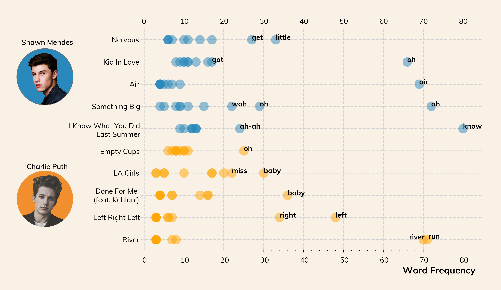
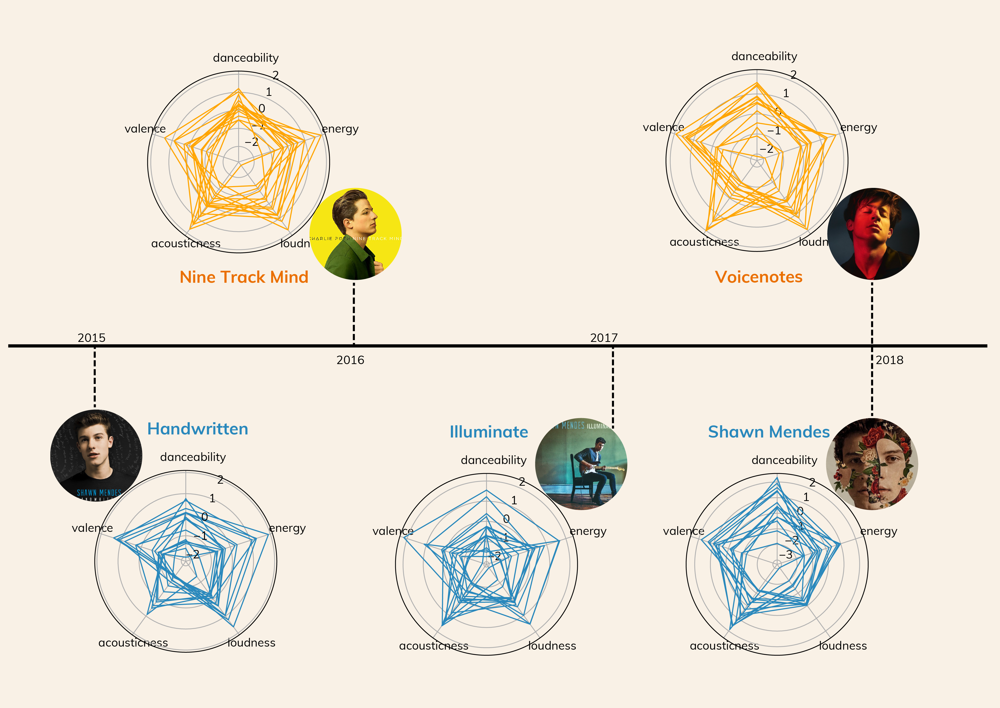
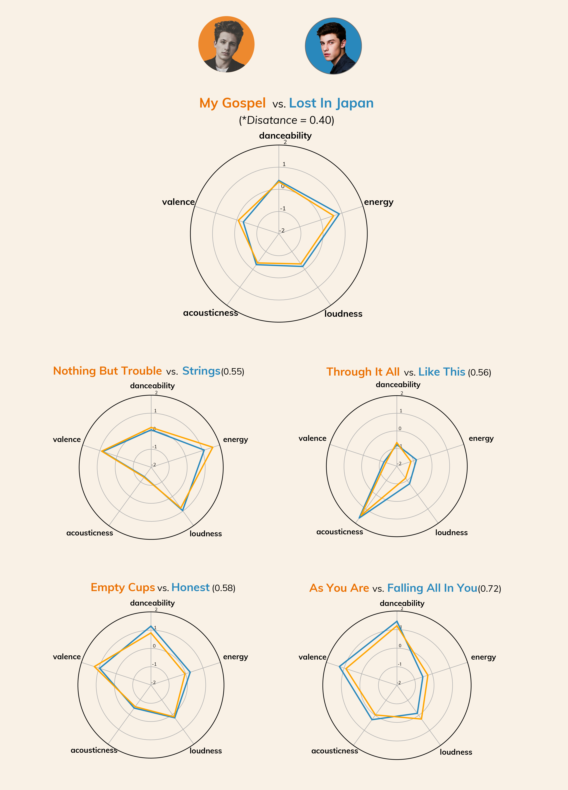
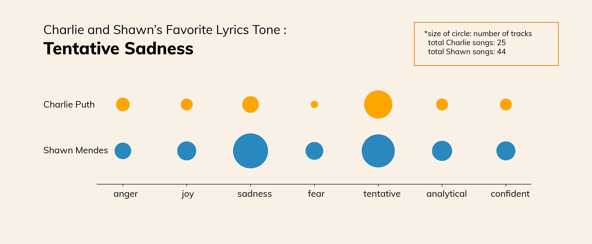

Pop Culture
BY Christina Zhang
Published August 7, 2018
Rising pop kings.Talented songwriters.Gym buddies. These are just a few words to describe Charlie Puth and Shawn Mendes, who followed a similar path to gain their fame. Shawn Mendes released his first album Handwritten in 2015, followed by Charlie Puth, who made a debute with Nine Track Mind 8 months after. This year, both of them released their latest album in May, bringing people's attention back to an ongoing discussion: who is going to be the next king of pop, the next Justin Bieber?
I love their music, and summer is such a nice timing for releasing upbeat pop jams. However to be honest, I've been struggling telling the difference between the two artists for a very long time. I once thought that it might be just the issue of pop music as a easily 'sound-alike' genre, but that's not a satisfied answer, obviously.
I decided to look into their past and latest albums, track by track, and compare the two artists' works from three aspects:
Diversity or Repetitiveness, a Word Choice Dilemma
Most Repetitive Words
Both of them fell into the deep pop trap of ah-oh-baby and they LOVE repeating track name a million times
SOURCE: Lyricswikia,Spotify
Based on tfidf (term frequency inverse document frequency) analysis of the lyrics, I calculated the 'distance' between the lyrics vectors in order to find the most similar tracks of the two based on the word choice, and here is the result: Charlie Puth's Patient and Shawn Mendes' No Promises are most similar regarding word choice ('So Please Baby'vs.'Baby So Please')
They Didn't Sound Like Their Old Music, In a Good and a Bad Way.
I am thrilled to find audio attributes from Spotify's api, and I mapped audio attributes on two levels: albums and tracks.
On the album level, Charlie Puth has a more diverse grasp on audio production over time, a transition from candy-boy-not-like-me Nine Track Mind to funk-and-R&B-fusedVoicenotes. In an NYTimes interview, Charlie Puth described his production of Voicenotes as a process of 'figure out who I was musically in front of millions of people', and he seems achieved this pretty well. However, for Shawn Mendes, his new album is probably another way around: from having edges to losing edges NYTimes Album Review described his self-titled new album as ' a collection of homeless songs for which Mr. Mendes is merely a vehicle.' Not surprisingly, the audio fingerprints well reflected the transition of both artists. While Charlie Puth's album footprints became more complex and 'messy' in the latest album, Shawn Mendes's self-titled new album has almost same audio fingerprints for most of the tracks, comparing to the wild and diverse fingerprints of his earlier albums.
A Timeline about Finding/Losing Music Identity
NOTE: The plot is based on a normalized scale of the five audio attributes.
SOURCE: Spotify
On a track basis, I turned the five audio attributes into an vector for each song and calculated the 'distance', audio-wise, between each songs of the two artists. The shorter the distance, the more similar the two song tracks are, audio-wise.
Proof: Some of Their Songs ARE Sound-alike
NOTE: The plot is based on a normalized scale of the five audio attributes.
SOURCE: Spotify
And Their Favourite Tone: Tentative Sadness
I used IBM's Tone Analyzer to generate both emotional tones(anger, sadness, joy, and fear) and language tones(analytical, tentative, confident) since their lyrics are very conversational and colloquial, and the result shows that the most frequently appeard emotional tone is sadness, and the most frequent appeared language tone is tentative, probably because both of them use a lot of 'hedging' in their language. IBM's Tone Analyzer defined the tones as following:
Lyrics Tone Analysis
SOURCE: Spotify
Go back to my Homepage